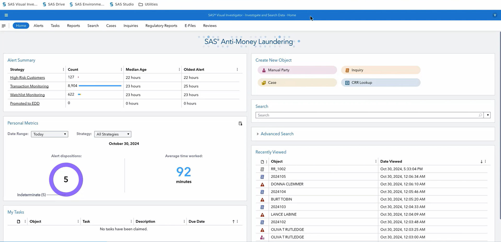
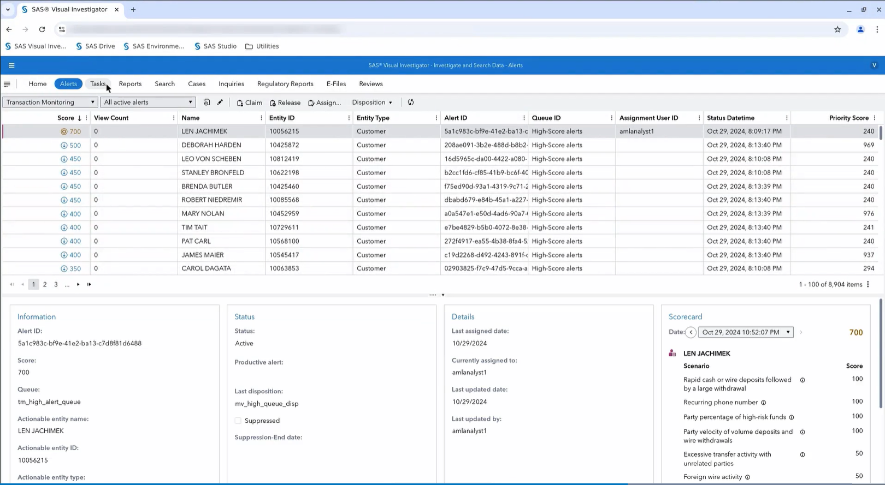
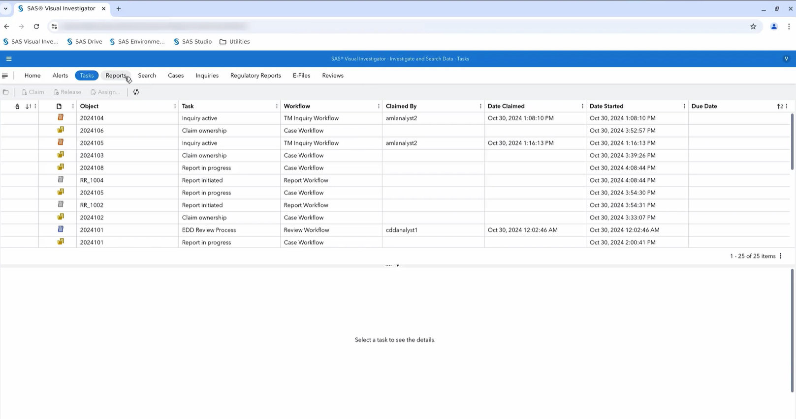
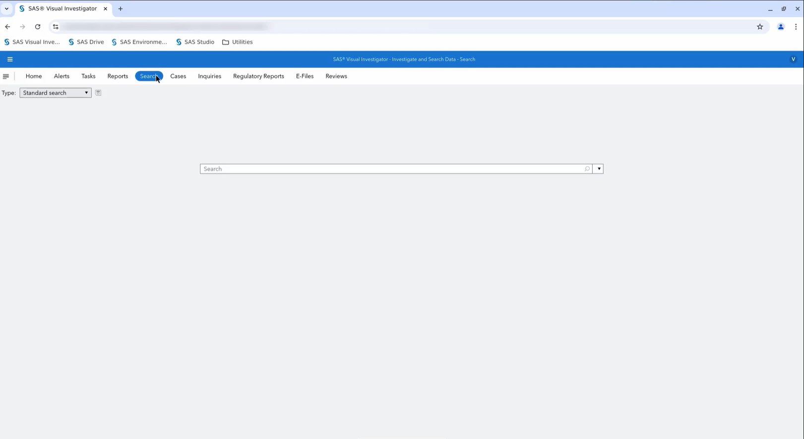
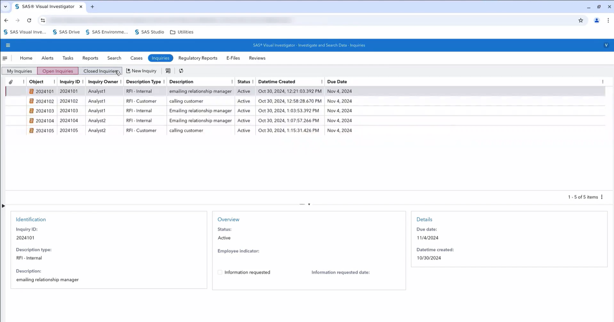
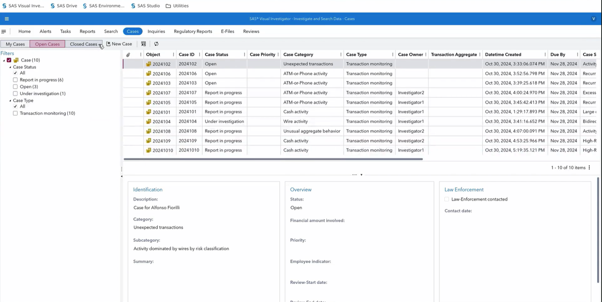
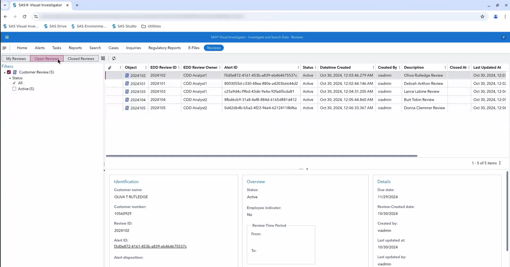
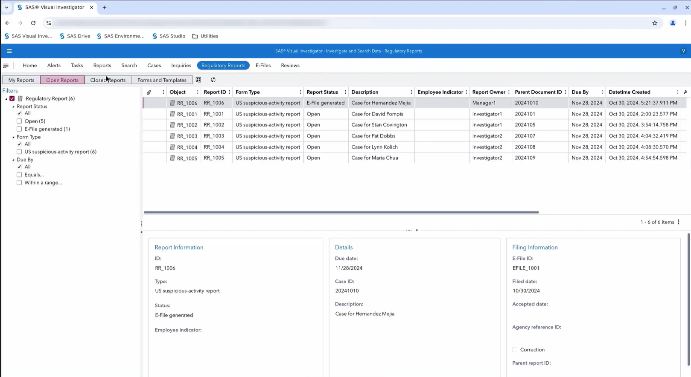
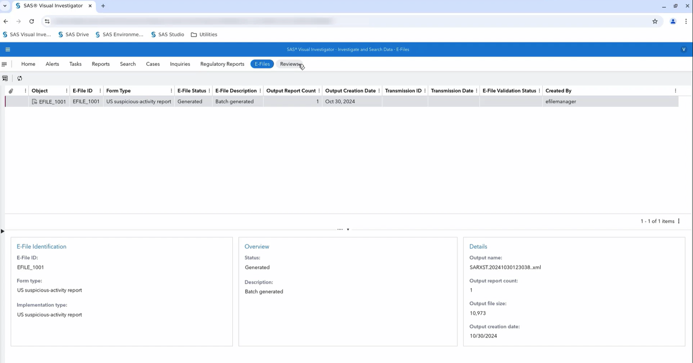
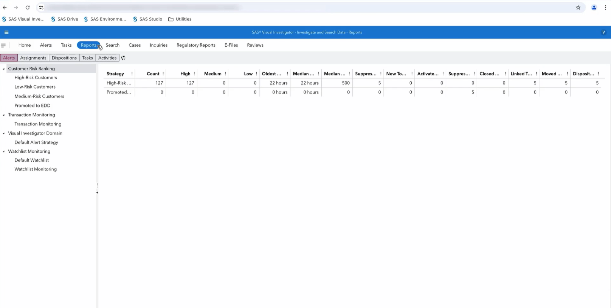

AML UI REFERENCE · SAS VISUAL INVESTIGATOR
SAS AML Transaction Monitoring
인터페이스 분석 정리
「Exploring the Transaction Monitoring Interface」 영상에서 캡처한 12개 화면을 기준으로, 각 메뉴의 역할과 실제 AML 분석 업무 흐름을 한국어로 정리한 문서입니다. 원본 화면 위에 번호를 표시하고, 바로 아래에 단순화한 와이어프레임을 함께 배치했습니다.
상단 메뉴 빠른 해석
| 메뉴 | 한국어 의미 | 핵심 용도 | 주 사용자 |
|---|---|---|---|
| Home | 업무 대시보드 | Alert 적체량, 개인 실적, 내 업무, 최근 조회 확인 | 분석가·관리자 |
| Alerts | 탐지 경보 | 위험점수와 탐지 근거를 검토하고 정상 종결 또는 상향 | L1 분석가 |
| Tasks | 업무 작업함 | Case·Inquiry·보고·EDD 업무의 배정과 기한 관리 | 분석가·조사자 |
| Reports | 내부 운영 통계 | Alert·배정·판정·업무량 집계 | 팀장·운영 관리자 |
| Search | 통합 검색 | 고객·계좌·Alert·Case·보고서 검색 | 전 사용자 |
| Cases | 심층 조사 사건 | 여러 Alert, 거래, 증거, 조사 의견을 하나의 사건으로 관리 | L2 조사자 |
| Inquiries | 추가정보 요청 | 고객 또는 내부 담당자에게 자료와 설명 요청 | 분석가·조사자 |
| Regulatory Reports | 규제 보고서 | SAR/STR 작성·검토·승인 상태 관리 | 조사자·보고책임자 |
| E-Files | 전자 제출 파일 | 승인된 보고서를 XML 등 제출 파일로 생성·검증·전송 | 보고 관리자 |
| Reviews | 고객위험 재검토 | 고위험 고객에 대한 CDD/EDD 재평가 | CDD/EDD 분석가 |
전체 서비스 운영 흐름
캡처 화면을 실제 업무 순서로 재배열하면 아래 흐름입니다. Home과 Reports는 전 과정의 현황을 관찰하는 화면이고, 핵심 처리 흐름은 Alerts부터 E-Files까지 이어집니다.
1. Home — 분석가 업무 대시보드
캡처 이미지 #7 · SAS Visual Investigator / Home

1 2 3 4 5- 1Alert Summary
탐지 영역별 미처리량과 적체 시간을 확인합니다. - 2Personal Metrics
오늘 처리한 건수, 판정 결과, 평균 작업시간입니다. - 3My Tasks
현재 사용자에게 배정된 업무와 기한입니다. - 4Create New Object
Case·Inquiry 등을 수동으로 생성합니다. - 5Search / Recently Viewed
통합 검색과 최근 업무 재진입 영역입니다.
Alert Summary 해석
- High-Risk Customers: 고위험 고객 경보
- Transaction Monitoring: 거래 모니터링 경보
- Watchlist Monitoring: 제재·PEP 등 감시목록 경보
- Promoted to EDD: 강화된 고객확인으로 상향된 건
- Median Age / Oldest Alert: 경보의 중앙 대기시간 / 최장 대기시간
이 화면의 성격
경영진용 BI 화면이라기보다 분석가의 업무 시작 화면입니다. 업무량 확인, 내 실적 확인, 신규 객체 생성, 최근 조회로의 복귀를 한곳에서 제공합니다.
분석가 홈Alert 적체개인 생산성빠른 작업
2. Alerts — 거래 모니터링 경보 검토
캡처 이미지 #12 · SAS Visual Investigator / Alerts

1 2 3 4- 1업무 제어
경보를 가져오고, 반환하고, 배정하고, 판정합니다. - 2Alert Queue
위험점수와 우선순위에 따라 경보를 정렬·필터링합니다. - 3선택 Alert 상세
상태, 담당자, 큐, 억제 여부 등 운영 메타데이터입니다. - 4Scorecard
점수를 만든 시나리오와 기여도를 보여주는 설명 영역입니다.
상단 업무 버튼
- Claim: 공용 큐의 Alert를 내가 담당
- Release: 담당 해제 후 큐로 반환
- Assign: 다른 분석가에게 배정
- Disposition: 검토 결과를 입력하고 상태를 변경
Score와 Priority Score
Score는 여러 탐지 시나리오에서 누적된 위험 신호를 나타내고, Priority Score는 업무 큐에서 어떤 Alert부터 처리할지를 정하기 위한 운영 우선순위로 볼 수 있습니다. 두 값은 같은 목적의 숫자가 아닐 수 있습니다.
캡처에 표시된 Scorecard 시나리오
- 빠른 현금·송금 입금 후 대규모 인출
- 여러 고객이 동일 전화번호를 반복 사용
- 고위험 자금의 비중
- 대량 입금 및 송금 인출의 비정상적인 속도
- 관계없는 상대방과의 과도한 이체
- 해외 송금 활동
3. Tasks — 담당 업무 작업함
캡처 이미지 #9 · SAS Visual Investigator / Tasks

1 2 3- 1배정 제어
업무를 가져오거나 다른 사람에게 배정합니다. - 2업무 목록
업무 종류, 워크플로, 담당자, 기한을 비교합니다. - 3상세 패널
선택한 업무의 세부 내용이 표시되는 영역입니다.
캡처에는 Claim ownershipInquiry activeReport initiatedReport in progressEDD Review Process가 보입니다. 즉 Tasks는 별도의 조사 데이터라기보다 여러 업무 객체에서 생성된 사람 중심의 할 일 목록입니다.
맨 위로 ↑4. Search — 고객·계좌·업무 객체 통합 검색
캡처 이미지 #3 · SAS Visual Investigator / Search

1 2- 1검색 방식
표준 검색 또는 조직에서 설정한 검색 유형을 선택합니다. - 2통합 검색
고객명·고객번호·계좌·Alert ID·Case ID 등으로 조회합니다.
프로젝트에서는 객체 유형, 생성 기간, 위험등급, 상태, 담당자, 거래금액, 국가를 필터로 제공하고, 검색 결과에서 고객 360 → 거래 상세 → 관계 그래프 → 관련 Alert/Case로 이동하게 만드는 것이 좋습니다.
맨 위로 ↑5. Inquiries — 추가정보 요청(RFI)
캡처 이미지 #4 · SAS Visual Investigator / Inquiries

1 2 3- 1상태별 탭
내 요청, 열린 요청, 종료된 요청을 분리합니다. - 2Inquiry Queue
담당자·유형·설명·상태·기한을 관리합니다. - 3요청 상세
선택한 요청의 식별정보와 처리 상태를 확인합니다.
RFI - Internal
고객담당자, 영업점, 관계 관리자 등 내부 조직에 거래 배경이나 보유 자료를 요청합니다.
RFI - Customer
고객에게 거래 목적, 자금 출처, 계약서·영수증·사업자료 등의 추가 확인을 요청합니다.
응답받은 자료는 해당 Alert 또는 Case의 증거와 조사 의견으로 연결되어야 하며, 누가 언제 요청하고 회신받았는지 감사 이력으로 남아야 합니다.
맨 위로 ↑6. Cases — 심층 조사 사건 관리
캡처 이미지 #6 · SAS Visual Investigator / Cases

1 2 3- 1Case Filter
상태와 사건 유형으로 업무 대상을 좁힙니다. - 2Case Queue
사건 분류, 담당 조사자, 기한과 진행상태를 비교합니다. - 3Case Details
선택 사건의 설명, 조사 개요, 수사기관 관련 정보를 봅니다.
캡처에 보이는 Case 유형과 상태
Unexpected transactionsATM-or-Phone activityCash activityWire activityUnusual aggregate behavior
OpenUnder investigationReport in progress
프로젝트의 Case 상세에는 연결 Alert, 의심 거래 목록, 고객 KYC, 거래 타임라인, 관계 그래프, 메모·첨부파일, 판정 근거, 승인·변경 이력을 추가하는 것이 적합합니다.
맨 위로 ↑7. Reviews — 고위험 고객 CDD/EDD 재검토
캡처 이미지 #8 · SAS Visual Investigator / Reviews

1 2 3- 1상태 필터
활성·종료 고객 검토를 구분합니다. - 2EDD Review Queue
고객별 검토 담당자, 관련 Alert, 생성일과 상태를 봅니다. - 3Review Details
고객 식별정보, 검토기간, 생성·수정 이력을 확인합니다.
CDD(Customer Due Diligence)는 고객확인, EDD(Enhanced Due Diligence)는 고위험 고객에 대한 강화된 고객확인입니다. 신원·실제소유자·직업/사업·자금 원천·거래 목적·기존 위험등급을 다시 검토하고 고객관계 유지 여부를 판단합니다.
맨 위로 ↑8. Regulatory Reports — SAR/STR 규제 보고서 관리
캡처 이미지 #5 · SAS Visual Investigator / Regulatory Reports

1 2 3- 1보고서 필터
상태, 양식, 마감일로 보고 대상을 좁힙니다. - 2보고서 큐
작성·검토·파일 생성 상태와 담당자를 관리합니다. - 3보고·제출 상세
원본 Case와 E-File 연결, 제출일, 접수 정보를 봅니다.
미국 환경에서는 US suspicious-activity report를 사용합니다. 국내 프로젝트에서는 화면명을 의심거래보고(STR)로 바꾸고 다음 상태 흐름을 적용할 수 있습니다.
Parent Document ID는 이 규제 보고서가 어느 Case에서 생성되었는지를 나타냅니다. 따라서 기본 연결 구조는 Alert → Case → Regulatory Report입니다.
맨 위로 ↑9. E-Files — 전자 제출 파일 생성·검증
캡처 이미지 #1 · SAS Visual Investigator / E-Files

1 2 3 4- 1E-File Queue
파일 생성, 전송, 유효성 검증 상태를 관리합니다. - 2Identification
전자파일 ID와 보고 양식 정보입니다. - 3Overview
생성 상태와 묶음 설명입니다. - 4Output Details
실제 XML 파일명, 개수, 크기, 생성일입니다.
Regulatory Reports가 개별 보고서의 내용과 승인 상태라면, E-Files는 승인된 하나 이상의 보고서를 제출기관이 받을 수 있는 파일로 포장한 전송 단위입니다.
10. Reports — AML 팀 내부 운영 통계
캡처 이미지 #2 · SAS Visual Investigator / Reports

1 2 3- 1모니터링 영역
고객위험, 거래, 감시목록 보고를 선택합니다. - 2보고 관점
Alert·배정·판정·Task·Activity 통계를 전환합니다. - 3집계 표
위험등급별 건수, 체류시간, 종결·억제 등 운영량을 봅니다.
Reports는 AML 팀 내부의 업무량·성과·적체 통계이고, Regulatory Reports는 FIU 등 규제기관에 제출하는 공식 의심거래보고서입니다.
우리 GNN 기반 AML 프로젝트에 적용할 구성
SAS의 실무 흐름은 유지하되, GNN 프로젝트의 강점이 드러나도록 다음 6개 화면으로 압축하는 것이 좋습니다.
| 화면 | SAS에서 가져올 요소 | GNN 프로젝트의 추가 요소 |
|---|---|---|
| 1. 운영 대시보드 | Alert 건수·적체시간·개인 업무 | GNN/Rule별 발생량, 오탐률, Alert→Case 전환율 |
| 2. Alert 큐 | 점수, 우선순위, 담당자, 상태, Claim/Assign | Rule 점수와 GNN 점수 분리, 모델 버전, 불확실성 |
| 3. Alert 조사 상세 | Scorecard, 고객·Alert 메타데이터 | 중요 거래, 위험 이웃, 설명 가능한 부분 그래프 |
| 4. 네트워크 분석 | SAS 영상에는 상세 화면 없음 | 1~2 hop 확장, 기간 필터, Fan-in/out, 순환송금, 중요 엣지 |
| 5. Case 관리 | 상태·담당자·분류·기한·보고 진행 | 관련 Alert 병합, 증거, 메모, 조사 타임라인, 승인 이력 |
| 6. STR 모의 보고 | Regulatory Report → E-File 흐름 | 자동 초안, 근거 출처 링크, 승인, XML/JSON 모의 제출 |
권장 탐색 메뉴
수업·포트폴리오 범위에서는 SAS의 모든 메뉴를 그대로 복제할 필요가 없습니다. 핵심 차별점은 Alert 상세에서 “GNN이 왜 이 거래 또는 계좌를 의심했는가”를 시각적으로 설명하고, 그 근거가 Case와 STR 문안까지 이어지는 것입니다.
이 영상에서 확인되지 않은 화면
상단 메뉴 기준으로 12장 모두 확보되어 누락은 없습니다. 다만 「인터페이스 소개」 영상이므로 다음 실무 상세는 캡처에 포함되지 않았습니다.
- Alert 클릭 후의 전체 조사 상세 및 의심 거래 원장
- 고객 360 프로필과 KYC 문서
- 고객–계좌–거래 관계 그래프 및 시계열 탐색
- 탐지 Rule·시나리오 설정과 모델 운영 화면
- Case의 조사 메모, 증거파일, 전체 감사 로그
- SAR/STR 실제 작성 폼과 승인자의 상세 검토 화면